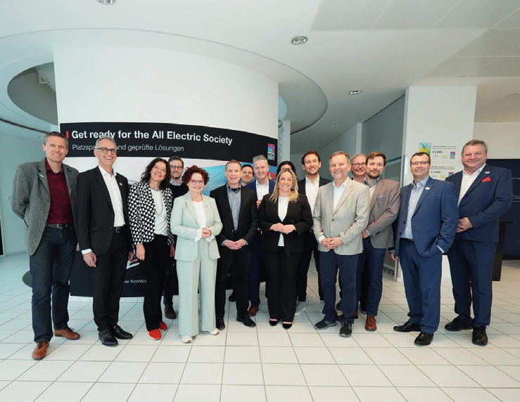
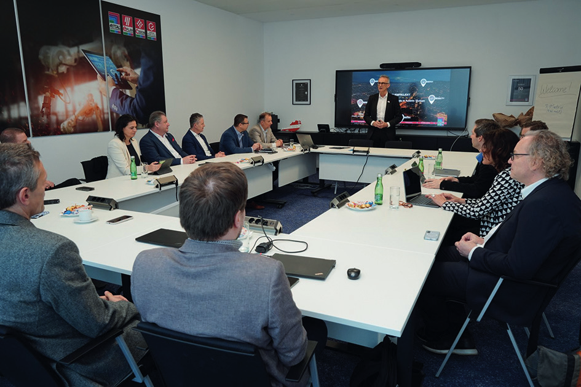

Ein Modell mit großer Zukunft
Der Smart Circle Austria bringt namhafte Unternehmen, Forschungsinstitute und Start-ups an einen Tisch, um gemeinsam an nachhaltigen, konkreten Lösungen zu arbeiten — und stärkt damit den Wirtschaftsstandort Österreich.

Innovation braucht nicht nur Visionen, sondern auch das richtige Netzwerk: Der Smart Circle Austria bringt namhafte Unternehmen, Forschungsinstitute und Start-ups aus den verschiedensten Branchen an einen Tisch, um gemeinsam an nachhaltigen, konkreten Lösungen mit Mehrwert zu arbeiten. Im Zentrum stehen dabei Bereiche wie Kreislaufwirtschaft, Energieeffizienz und Ladeinfrastruktur, mit dem Ziel, den Wirtschaftsstandort Europa und insbesondere Österreich zu stärken.
In regelmäßigen Treffen entstehen wegweisende Konzepte und Kooperationen, um das Land als Vorreiter für eine nachhaltige, energieeffiziente sowie vernetzte Gesellschaft zu etablieren, die Innovationskraft und Resilienz Österreichs voranzubringen und nicht zuletzt lokale Wertschöpfung zu generieren. Gegründet auf Initiative von Marcus Schellerer, Geschäftsführer Rittal Österreich, haben sich bereits Unternehmen und Organisationen wie unter anderem Asfinag, Eaton, Accupower, Sclable oder Silicon Austria Labs dem Smart Circle Austria angeschlossen.

Ein Modell mit großer Zukunft
Im Beisein von Staatssekretärin Elisabeth Zehetner, zuständig für Energie, Start-ups und Tourismus im Bundesministerium für Wirtschaft, Energie und Tourismus, wurden Ende März in den Räumlichkeiten von Rittal Österreich unterschiedliche Leuchtturmprojekte — wie intelligente Ladeparks für die Unterstützung der E-Mobilität oder die Integration von Rechenzentren direkt in Windkraftanlagen — diskutiert und die nächsten Schritte beschlossen.
Nach einem Rundgang über das Gelände beteiligte sich Staatssekretärin Zehetner intensiv an den Gesprächen und würdigte die branchenübergreifende Zusammenarbeit von Unternehmen, um gemeinsam Chancen zu nutzen und die anstehenden Herausforderungen aktiv anzugehen, ausdrücklich als Modell mit großer Zukunft. In diesem Zusammenhang verwies sie auch auf das Erneuerbare-Ausbau-Beschleunigungsgesetz (EABG), das Genehmigungsverfahren drastisch vereinfachen soll, sowie neue Instrumente für die Mobilisierung von privatem Kapital und flexiblere Rechtsformen für innovative Unternehmen.
„Zusammenarbeit ist der Schlüssel.“
Industrie und Politik ziehen an einem Strang
Wenn Industrie und Politik an einem Strang ziehen, können echte Lösungen für die Energiewende und den Erhalt der europäischen Wettbewerbsfähigkeit entstehen. „Genau dafür steht Smart Circle Austria: Wir wollen Österreich als Vorreiter für eine nachhaltige, energieeffiziente und vernetzte Gesellschaft positionieren. Gemeinsam nutzen wir Synergien, um innovative Projekte in den Bereichen Energieeffizienz und Ladeinfrastruktur in Leuchtturmprojekten umzusetzen“, bringt es Marcus Schellerer, Geschäftsführer Rittal Österreich, abschließend auf den Punkt.
Weitere „Mitstreiter“ sind beim Smart Circle Austria jederzeit herzlich willkommen. Interessenten können sich an Martina Manich (m.manich@team-mt.de) oder Andreas Hrzina (hrzina.a@rittal.at) wenden.